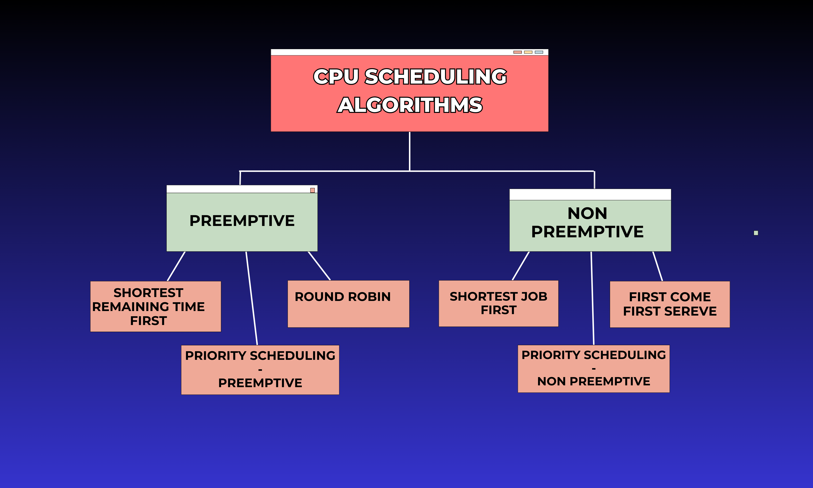

Discover how modern operating systems allocate CPU time efficiently.
What is CPU Scheduling?
CPU scheduling is a method the operating system uses to choose which task or process should use the CPU at any given moment. Since the CPU can only focus on one task at a time, scheduling helps manage multiple tasks waiting to be done.
Here’s what CPU scheduling aims to achieve:
Make the most of the CPU’s time: Ensure the CPU is busy rather than idle.
Reduce delays:Cut down waiting time and speed up task execution.
Types of Algorithms

Preemptive Scheduling
In preemptive scheduling, the operating system can interrupt a running process and move it to the ready state when a higher‑priority process needs the CPU.
Algorithms based on preemptive scheduling are: Round Robin (RR), Shortest Remaining Time First (SRTF), and Priority (Preemptive).
Advantages[+]
Prevents any one process from monopolizing the CPU.
Improves overall responsiveness in multi-tasking systems.
Widely adopted in modern operating systems for better process management.
Disadvantages[+]
Requires complex implementation due to frequent context switching.
Increased overhead can impact overall performance.
Risk of starvation for low‑priority processes.
Algorithms[+]
Round Robin (RR)
Round Robin assigns a fixed time quantum to each process in a cyclic order. Once the time expires, the process is moved to the back of the queue. This ensures fairness and responsiveness in time‑sharing systems, although it may lead to more context switches.
Shortest Remaining Time First (SRTF)
SRTF selects the process with the smallest remaining execution time. It minimizes waiting time by dynamically adjusting priorities, though frequent preemptions may introduce overhead.
Priority (Preemptive)
Preemptive Priority scheduling assigns the CPU based on process priority, allowing higher‑priority tasks to preempt lower ones. This benefits critical tasks but requires careful management to prevent starvation.
Non‑Preemptive Scheduling
In non‑preemptive scheduling, a running process retains the CPU until it terminates or enters a waiting state.
Algorithms based on non‑preemptive scheduling are: First Come First Serve (FCFS), Shortest Job First (SJF), and Priority (Non‑Preemptive).
Advantages[+]
Simpler implementation with minimal overhead.
Ensures processes are executed in the order of arrival.
Requires fewer system resources compared to preemptive methods.
Disadvantages[+]
May lead to longer waiting times for short processes.
Subject to the "convoy effect," where small tasks wait behind long‑running ones.
Algorithms[+]
First Come First Serve (FCFS)
FCFS executes processes in the order they arrive. Its simplicity is advantageous; however, a long‑running process at the start can delay all subsequent processes.
Shortest Job First (SJF)
SJF selects the process with the shortest execution time next. This minimizes average waiting time but depends on accurately estimating each process's runtime.
Priority (Non‑Preemptive)
In Non‑Preemptive Priority scheduling, processes are executed based on their assigned priority without interruption. This reduces context switching overhead, but if high‑priority tasks are rare, it can lead to inefficient CPU utilization.